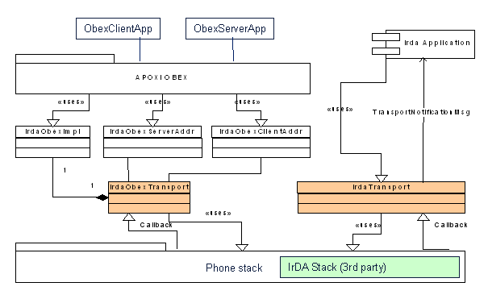

IrDA Overview
1 Introduction
IrDA stands for Infrared Data Association. Currently APOXI supports general transport related functionality like enabling or disabling the infrared port hardware for power saving purposes, setting the device nickname and setting IrDA hint bits.
Besides that APOXI IrDA can be used as transport for OBEX transfers. The OBEX transport adapter is used by the APOXI OBEX implementation. It should only be used through the APOXI OBEX interfaces not directly.
2 Overview
The following figure gives an overview of the APOXI IrDA components and their interaction with other system components.
 |
Figure 1 APOXI IrDA Components
3 Architecture
The APOXI IrDA module consists of two main function blocks. They are:
3.1 IrdaTransport
IrdaTransport is inherited from AbstractTransport and extends the functionality by adding IrDA stack specific methods. IrdaTransport is a singleton class that is used to access the underlying IrDA stack implementation. When OBEX is supported it also contains an IrdaObexTransport instance.
3.1.1 Timer
The default time out for switching off the IrDA hardware is set to 10 minutes. This switching of of IrDA hardware helps to save the battery power during idle time.
3.2 IrdaObexTransport
The IrdaObexTransport class implements IrDA specific OBEX transport related functions and protocols. Address resolution is done by this class. It is also responsible for registering the IrDA OBEX implementation with the APOXI OBEX ObexMngr.
3.3 IrdaObexAddr
The IrdaObexClientAddr and IrdaObexServerAddr classes are used to specify an OBEX client or server address.
3.4 IrdaObexImpl
The IrdaObexImpl class is responsible of implementing the abstract ObexLayer interface. This interface is used by the APOXI OBEX module to start OBEX client commands and to get notified about incoming server commands.
In order to manage different client and server contexts there are two private helper classes inside IrdaObexImpl These helper classes include the data structures that are required by the IrDA stack internally. Besides private structs it also provides a buffer that is used by the IrDA stack to build outgoing headers.
As the context is passed to several callback functions by the IrDA stack, a reference to the IrdaObexImpl object included. The object also holds several variables that describe the current state of the context: ObexOperationId of the current operation and a flag whether an operation is currently running.
The IrdaObexImpl class holds an array of both APOXI_IRDA_OBEX_MAX_CHANNELS client and server channel pointers. Every time a new channel is requested by a client or server, an according object is created and the slot is filled with the new object.
3.5 Auto switch off of IrDA hardware
The auto switch off of IrDA hardware helps to save battery power during idle time. A timer is started when IrdaTransport::OnAvStateChanged() is called, and the following coditions are met:
The default time out for switching off the IrDA hardware is set to 10 minutes. This default time out can be overwritten by a function call from an application to set a new value, but use of this function is optional.
The time out specifies the amount of milliseconds the IrDA hardware remains active after last activity on the interface. The hardware will be switched off when the time out elapses.
Setting time out value to 0 milliseconds has a special meaning, this setting disables the time out and the IrDA hardware will not be switched off when it is idle. Application could use this feature, for instance, when the phone is connected to power supply and no power saving features are needed.